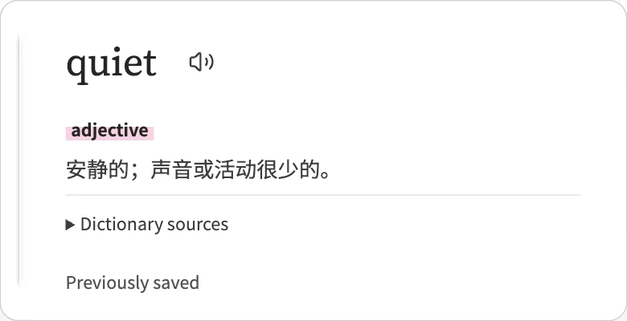

LexiCue / English reading
Read the word.Keep the context.
Bring something you want to read. Look up a word and keep the sentence where you first found it.
Reading desk
Start with a story of your own.
Import a book, an article or subtitles. You can also paste text, a web link or a YouTube URL. Preview the material and add it to your reading desk.
User guide
In-text lookup
Hear a word right where you find it.
Select quiet. The pronunciation control sits beside the headword. Read through its meanings, then return to the sentence to see which one fits.
User guide
Save and recall
One phrase. Two different stories.
In one story, take off goes with coats. In another, a plane takes off before dawn. Save the original sentence and its source, then revisit them when the phrase is highlighted in a later reading.
User guide

Read a passage yourself.
Open a sample and select an English word to see what it means in context.
Public download: v0.4.5 for macOS, Windows and Android. The online workspace previews the newer reading interface; no public iPhone installer is available.